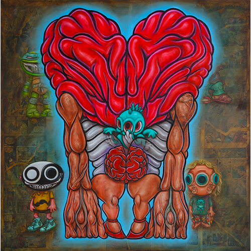
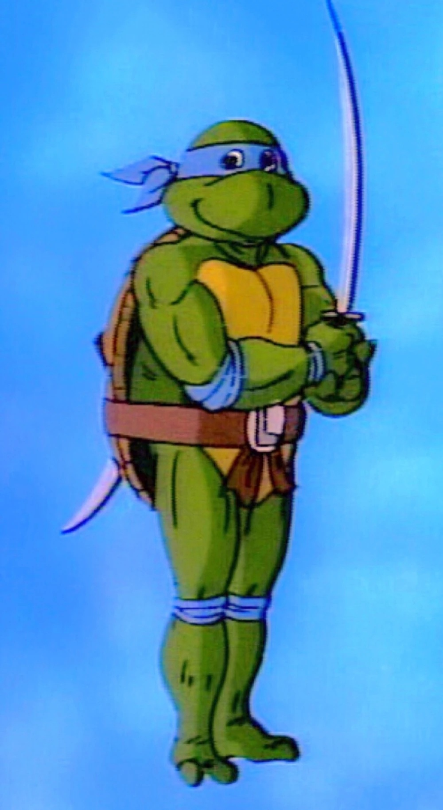

Exhibitions
Delusionville, Allouche Gallery, New York, New York, US, October 11–November 25, 2018.
Notes
This work appears in the online PDF catalogue for Ron English: Delusionville, available here.
This work references the Peanuts character Charlie Brown, created by Charles M. Schulz; a representative image is available here.
It also references Leonardo from the 1987 Teenage Mutant Ninja Turtles TV series; a representative image is available here.
Ancillary Documentation

